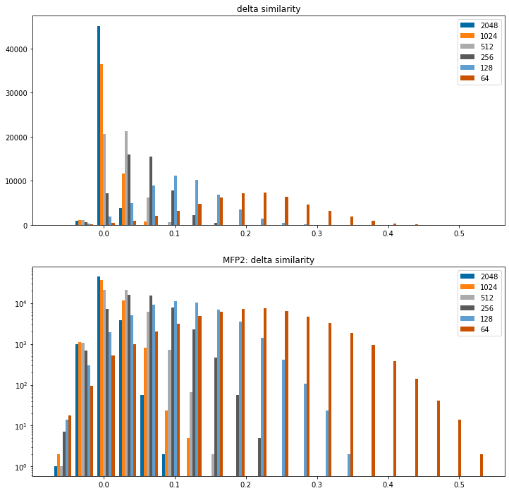
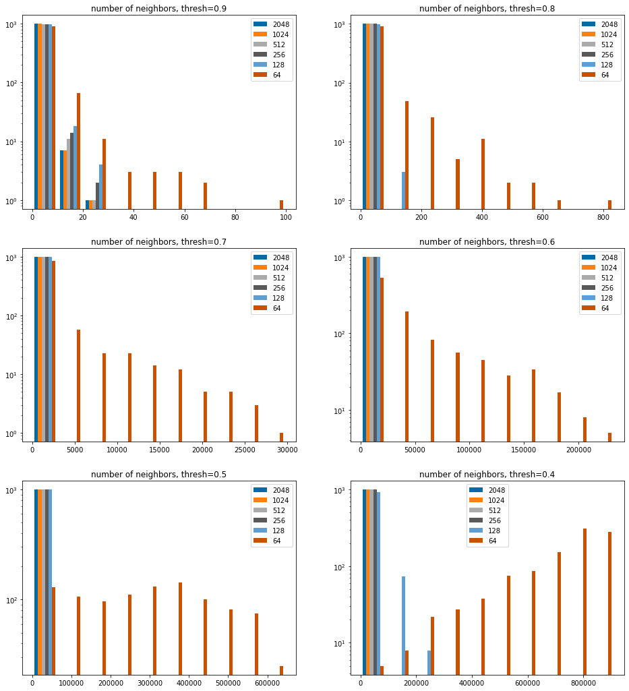
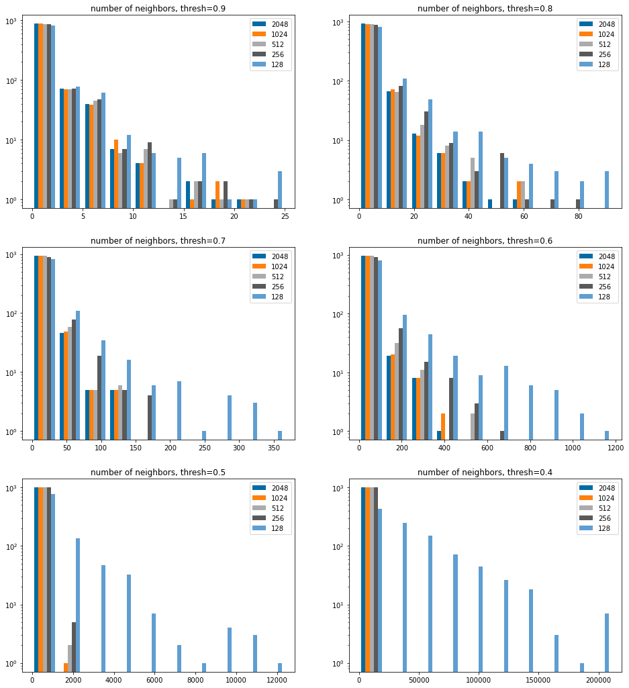
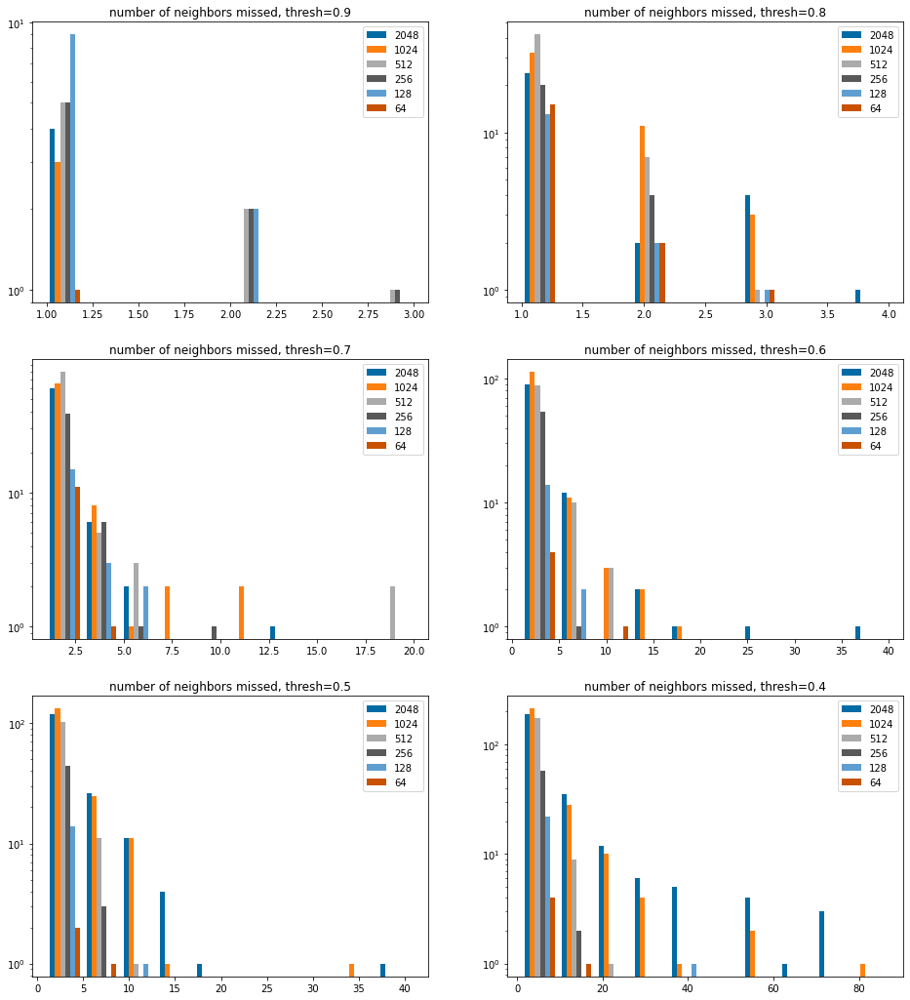
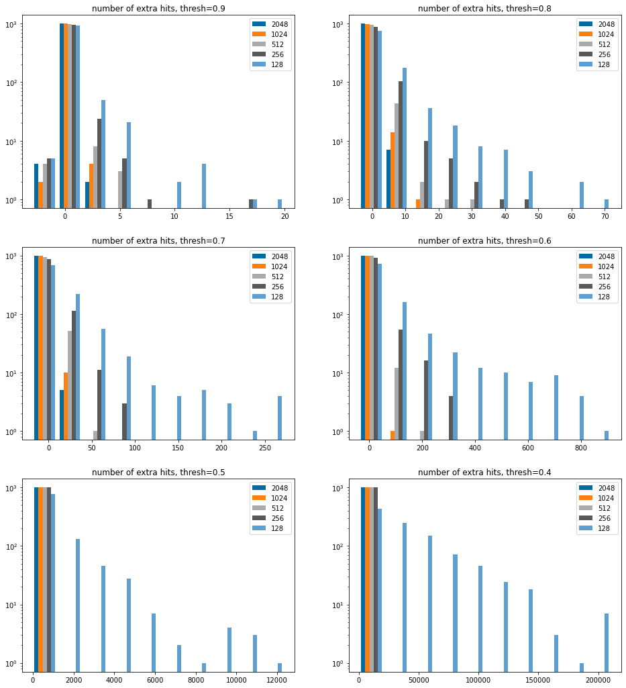

This one has been on the back burner for quite a while. When Pat Lorton was working on the initial version of gpusimilarity and his presentation for the 2018 RDKit UGM he dealt with the limited amount of memory available on GPUs by loading highly folded fingerprints into the GPU, retrieving extra compounds for a TopN query, and then rescoring those compounds using full-sized fingerprints. I wanted to go back and look at the same problem again from the perspective of a threshold similarity query - i.e. “give me all of the results that have a similarity above my threshold” - instead of the TopN query - i.e. “give me the N nearest neighbors in the database” - Pat was looking at.
This blog post starts that. I’m going to take a more general approach and look at the impact of fingerprint size on search results and performance at various threshold levels. I’m not going to actually use gpusimilarity in this particular post, but hopefully I will get to that in the future.
The previous post included performance data for using the different fingerprint sizes do do similarity searches in the RDKit PostgreSQL cartridge and with FPSim2. I’ve not reproduced that here, but I plan to pick that up in a followup post.
The TL;DR summary: When working with the RDKit’s Morgan2 fingerprint (MFP2), I think it’s reasonable to fold the fingerprints down to 128 bits, particularly when using higher similarity thresholds. This balances the number of hits missed against the number of extra hits retrieved and can result in significant performance improvements when using a specialized search tool like FPSim2. The smaller fingerprints - 128 bit fingerprints are 1/16th the size of 2048 bit fingerprints - are faster to read from storage and allow us to fit considerably more fingerprints in the same amount of memory, which is particularly helpful with GPUs.
2022.09.5
Sun Mar 26 15:51:58 2023
%pylab is deprecated, use %matplotlib inline and import the required libraries.
Populating the interactive namespace from numpy and matplotlib
/home/glandrum/miniconda3/envs/rdkit_blog/lib/python3.10/site-packages/IPython/core/magics/pylab.py:162: UserWarning: pylab import has clobbered these variables: ['random', 'inf', 'indices']
`%matplotlib` prevents importing * from pylab and numpy
warn("pylab import has clobbered these variables: %s" % clobbered +
Impact of fingerprint size on computed similarity
Start by looking at the impact of increased fingerprint folding - decreasing fingerprint size - on similarity values.
For this I use the similarity comparison set that I put together a few years ago and recently updated again to ChEMBL30 (no post for that one, just a notebook). I’m more interested in the impact on molecules that have a reasonable similiarty to each other, so I’m using the set of pairs that have Tanimoto similarity of at least 0.6 with the Morgan1 fingerprint.
Generate the similarity values for multiple bit counts:
And then plot histograms to show how much the similarity changes relatively to the 4096 bit fingerprint for the different bit counts.
Positive values indicate that the folded fingerprint yields a higher similarity
I include the histogram twice: once with a linear y axis and once with a log y axis so that the behavior at the edges is more visible.
figsize(12,12)bcounts = (2048,1024,512,256,128,64)diffs = []for bcount in bcounts: diffs.append(np.array(sims[bcount])-np.array(sims[4096]))subplot(2,1,1)hist(diffs,label=[str(x) for x in bcounts],bins=20);legend();title('delta similarity');subplot(2,1,2)hist(diffs,label=[str(x) for x in bcounts],bins=20,log=True);legend();title('MFP2: delta similarity');

Clear (and generally unsurprising) conclusion from this: folding the fingerprints tends to increase computed similarity values. Going all the way down to 64bits does so dramatically.
It’s also worth looking at how much the folding changes the ranking of similarities. This is where I may get into trouble with people who are better at stats than I am, but I think the right metric for this is Spearman’s rank correlation coefficient:
from scipy import statsbcounts = (2048,1024,512,256,128,64)for bcount in bcounts: r,p = stats.spearmanr(sims[bcount],sims[4096])print(f"{bcount} bits: r={r:.3f} p={p:.3g}")
It’s nice to see how high these are, particularly 128 bits. Even the super-short 64 bit fingerprints maintain the ranking of these pairs reasonably well.
In the original version of this post I showed that their higher bit density causes the performance of the RDKit fingerprint degrades much more quickly as the fingerprints get short. I won’t revisit that here.
Impact on similarity searching
Let’s move on to looking at the impact shorter fingerprints have on similarity searching, specifically the number of results retrieved for queries using different similarity cutoffs.
Our test database for this is the SDF from ChEMBL32. I downloaded this directly from the ChEMBL website. It’s also possible to do this automatically using Charles Hoyt’s ChEMBL Downloader
Now collect the data. We’ll use 1000 randomly selected queries against the first million ChEMBL compounds.
We try a variety of different fingerprint sizes along with different similarity thresholds. For each threshold/size combination we keep track of the number of neighbors found for each query as well as the number of missing neighbors (neighbors found at that threshold with a 4096 bit fingerprint that were not found with the folded fingerprint).
dsize =1000000nQueries =1000from collections import defaultdictdef fold_fp(fp,sz):return DataStructs.FoldFingerprint(fp,fp.GetNumBits()//sz)thresholds = [0.4, 0.5,0.6,0.7,0.8,0.9]sizes = [64,128,256,512,1024,2048]results = defaultdict(lambda:defaultdict(list))missed = defaultdict(lambda:defaultdict(list))dbfps = [x[-1] for x in data[:dsize]]for sz in sizes:print(f'Doing fp len {sz}') tfps = []print('\t folding')for cid,smi,fp in data[:dsize]: tfps.append(fold_fp(fp,sz))print('\t running queries')for qcid,qsmi,qfp in queries[:nQueries]: nqfp = fold_fp(qfp,sz) sims = DataStructs.BulkTanimotoSimilarity(nqfp,tfps) osims = DataStructs.BulkTanimotoSimilarity(qfp,dbfps)for thresh in thresholds: oindices =set(i for (i,x) inenumerate(osims) if x>=thresh)if sz==sizes[0]: results[4096][thresh].append(len(oindices)) indices =set(i for (i,x) inenumerate(sims) if x>=thresh) cnt =len(indices) results[sz][thresh].append(cnt) missed[sz][thresh].append(len(oindices.difference(indices)))
Doing fp len 64
folding
running queries
Doing fp len 128
folding
running queries
Doing fp len 256
folding
running queries
Doing fp len 512
folding
running queries
Doing fp len 1024
folding
running queries
Doing fp len 2048
folding
running queries
that took a while to run, so save the results
dres = {}for k in results: dres[k] =dict(results[k])dmissed = {}for k in missed: dmissed[k] =dict(missed[k])withopen('../data/size_and_neighbors_results.mfp2.pkl','wb+') as outf: pickle.dump((dres,dmissed),outf)
withopen('../data/size_and_neighbors_results.mfp2.pkl','rb') as inf: results,missed = pickle.load(inf)
Comparing the the number of neighbors retrieved
To get a sense of what the data look like, pick a couple of threshold values and do a direct comparison of the number of neighbors found at the other bit counts with the number found at 4096 bits.
sthreshs =list(sorted(thresholds))sthreshs.reverse()nCols =2nRows =len(sthreshs)//nColsiflen(sthreshs)%nCols: nRows+=1figsize(8*nCols,6*nRows)bcounts = (2048,1024,512,256,128,64)for i,thresh inenumerate(sthreshs): subplot(nRows,nCols,i+1) hist([results[x][thresh] for x in bcounts],log='true', label=[str(x) for x in bcounts]); legend(); title(f'number of neighbors, thresh={thresh:.1f}');

Since that is dominated by the 64 bit results, stop showing them.
sthreshs =list(sorted(thresholds))sthreshs.reverse()nCols =2nRows =len(sthreshs)//nColsiflen(sthreshs)%nCols: nRows+=1figsize(8*nCols,6*nRows)bcounts = (2048,1024,512,256,128,)for i,thresh inenumerate(sthreshs): subplot(nRows,nCols,i+1) hist([results[x][thresh] for x in bcounts],log='true', label=[str(x) for x in bcounts]); legend(); title(f'number of neighbors, thresh={thresh:.1f}');

We can see here that the more folded fingerprints tend to yield more neighors at a given threshold. This makes sense given what we saw above, which is that similarity values tend to be higher as fingerprints are folded.
It’s also clear, though not super surprising, that the 64 bit fingerprint isn’t going to be useful with low similarity thresholds: we just get way too many extra hits.
How many hits do we miss?
This does not show the overwhelming number of examples where no hits are missed.
sthreshs =list(sorted(thresholds))sthreshs.reverse()nCols =2nRows =len(sthreshs)//nColsiflen(sthreshs)%nCols: nRows+=1figsize(8*nCols,6*nRows)bcounts = (2048,1024,512,256,128,64)for i,thresh inenumerate(sthreshs): subplot(nRows,nCols,i+1) hist([[y for y in missed[x][thresh] if y>0] for x in bcounts],log='true', label=[str(x) for x in bcounts]); legend(); title(f'number of neighbors missed, thresh={thresh:.1f}');

Efficiency, look at the number of extra hits
We don’t bother including 64 bits in here since it’s clear that from the above that too many results are returned.
sthreshs =list(sorted(thresholds))sthreshs.reverse()nCols =2nRows =len(sthreshs)//nColsiflen(sthreshs)%nCols: nRows+=1figsize(8*nCols,6*nRows)bcounts = (2048,1024,512,256,128,)for i,thresh inenumerate(sthreshs): subplot(nRows,nCols,i+1) hist([[y-results[4096][thresh][i] for i,y inenumerate(results[x][thresh])] for x in bcounts],log='true', label=[str(x) for x in bcounts]); legend(); title(f'number of extra hits, thresh={thresh:.1f}');

There are a small number of instances at higher thresholds where we don’t find all the hits, we saw this above.